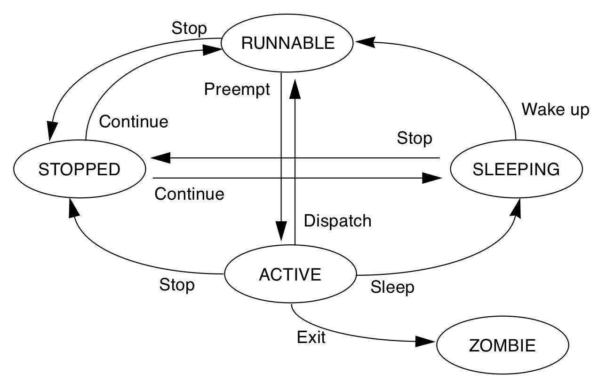
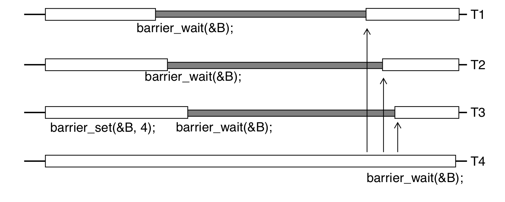

Pthread primer 笔记
进程和线程
在kernel中process的context
- cpu相关：program counter pointer, stack top pointer, cpu general registers, sates.
- 内存：memory map
- user: uid, gid, euid, egid, cwd.
- 信号: signal dispatch table
- File: file descriptors

thread的context data
- cpu相关：program counter pointer, stack top pointer, cpu general registers, sates.
- 内存相关: stack

线程的stack是分配在process的heap上的
//设置和获取线程的stack address
include <pthread.h>
int pthread_attr_setstack(pthread_attr_t *attr, void* stackaddr, size_t stacksize);
int pthread_attr_getstack(const pthread_attr_t* attr, void** stackaddr, size_t* stacksize);
整个进程只有一份signal dispatch table
所以signal 中断的时候，说不准会中断到那个thread里面，需要加signal mask来处理。
使用thread的好处
context switch: process的上下文切换比thread的context switch 耗时间.memory share: thread之间的通信，共享process的内存，file等资源比process之间的通信，share内存方便.
线程调度和生命周期
线程调度
线程有两种调度方式，一种是完全在user space, 由thread库做调度，优点是省了system call 从而省下了从user space 到kernel space的切换, 比较快，缺点是，有一个线程挂在IO上后，整个process都会被挂起.(可以把block的system call 改成nonblock的，使用asyc io来解决这个问题).
另外一种是kernel 实现的light weight process(lwp), lwp避免了整个线程被挂起的缺点，但是需要从user space 到kernel space的切换, 比完全user space实现的线程慢一点。
现实中这两种的实现的方式可以混合起来， 混合方式如下：
- 多个线程对应一个lwp
- 一个线程对应一个lwp
- 多个线程对应多个lwp
在pthread 中可以这么设置调度的属性:
//pthread中设置调度scope
//PTHREAD_SCOPE_SYSTEM 表示system 全局的， PTHREAD_SCOPE_PROCESS 表示process scope的。
pthread_attr_t attr;
pthread_attr_init(&attr);
pthread_setscope(&atttr, PTHREAD_SCOPE_SYSTEM);
pthread_create(&tid, &attr, foo, NULL);
影响线程调度的一些属性
- scope: PTHREAD_SCOPE_PROCESS, PTHREAD_SCOPE_GLOBAL
- policy: SCHED_RR, SCHED_FIFO, SCHED_OTHER
- priority
- inheritance
线程状态以及状态之间的迁移关系如下图：
四种running中的线程被切出去的状况
- synchronization 线程require lock的失败被挂在lock的sleep queue上。
- preemption 被抢占了，T1在运行的时候，一个更高优先级的线程T2到了runnable的状态, T1会被T2抢占了。
- yielding. 线程T1主动调用sched_yield, 如果有和T1优先权一样的T2线程，就切换到T2线程，如果没有，T1就接着运行。
- time-slicing. T1的时间片用完了，和T1有同样优先权的T2接着运行。
创建和退出线程
//create
int pthread_create(pthread_t* thread, const pthread_attr_t* attr, void*(* start_routine)(void*), void* arg);
//exit
void pthread_exit(status);
线程的返回值，一种是函数执行结束后，直接return的值，另外一种是pthread_exit(status)这个的返回值。
join: 等待线程执行结束
join之后线程会处于阻塞状态直到等待的线程T1执行完毕，join之后t1线程的相关内存会被清理掉，所以说一个子线程只能被join一次.
设置线程的属性为joinable
pthread_t thread_id;
pthread_attr_t attr;
pthread_attr_init(&attr);
pthread_attr_setdetachstate(&attr, PTHREAD_CREATE_JOINABLE);
pthread_create(&thread_id, &attr, work, (void*)arg);
阻塞等待线程的执行结果，获取线程的返回结果
//等待t1线程执行结束, exit_status 是子线程的返回值.
pthread_join(t1, &exit_status)
joinable线程和detehced线程的区别是线程结束的时候，资源(线程对应的标识符pthread_t, 线程返回信息)该怎么释放.
对于joinable线程t1, 只有当其他线程对t1调用了pthread_join之后, 线程t1才会释放所占用的资源, 否则 会进入类似于进程的zombile状态，这些资源不会被会回收掉.
使用信号量 等待线程执行结束
使用信号量等待一堆子线程执行结束, 在主线程里面调用thread_signle_barrier, 然后子线程结束的时候调用SEM_POST(barrier)
void thread_signle_barrier(sem_t* barrier, int count){
while( count > 0) {
SEM_WAIT(barrier);
count--;
}
}
detach
如果想要t1线程执行结束收系统自动回收t1的资源, 而不是通过调用pthread_join回收资源(会阻塞线程), 我们可以将线程设置为deteched, 有三种方式可以设置线程为deteched.
- 创建线程时指定线程的 detach 属性: pthread_attr_setdetachstate(&attr, PTHREAD_CREATE_DETACHED);
- 通过在子线程中调用 pthread_detach(pthread_self());
- 在主线程中调用 pthread_detach(thread_id);(非阻塞, 执行完会立即会返回)
取消线程的执行
在pthread中可以通过pthread_cancel(t1)来取消线程t1的执行, 这个会设置线程t1的cancel state, 由线程t1在自己在cancel point 检查是否退出线程, 在退出线程的时候会执行cleanup stack中的函数(比如释放自己hold的锁). 一般会block的函数调用，比如sem_wait, pthread_cond_wait或者会block的系统调用前后检查check point.
如下代码段：
void cleanup_lock2(void* arg){
pthread_mutex_unlock((pthread_mutex_t*)arg)
}
void thread1_run(){
pthread_mutex_lock(&answer_lock);
pthread_cleanup_push(cleanup_lock2, (void*)&answer_lock);
while(!firest_thread_to_find_answer) {
pthread_cond_wait(&cvn, &answer_lock);
}
pthread_cleanup_pop(0)
}
也可以通过pthread_setcanceltype设置为异步取消PTHREAD_CANCEL_ASYNCHRONOUS，这样会给t1线程发送SIGCANCEL信号，t1线程在信号处理函数中结束自己的执行。
Signal 信号处理
Linux 多线程应用中，每个线程可以通过调用 pthread_sigmask() 设置本线程的信号掩码, pthread_kill像某个线程发送signal.
signal handler 异步的方式处理信号
多线程处理signal时候需要注意事项
- 信号处理函数尽量只执行简单的操作，譬如只是设置一个外部变量，其它复杂的操作留在信号处理函数之外执行；
- errno 是线程安全，即每个线程有自己的 errno，但不是异步信号安全。如果信号处理函数比较复杂，且调用了可能会改变 errno 值的库函数，必须考虑在信号处理函数开始时保存、结束的时候恢复被中断线程的 errno 值；
- 信号处理函数只能调用可以重入的 C 库函数(只能调用async safe 的函数)；譬如不能调用 malloc（），free（）以及标准 I/O 库函数等；
- 信号处理函数如果需要访问全局变量，在定义此全局变量时须将其声明为 volatile，以避免编译器不恰当的优化
sigwait, 同步串行方式
等待信号的到来，以串行的方式从信号队列中取出信号进行处理.
void signal_hanlder_thread() {
sigemptyset(&waitset);
sigaddset(&waitset, SIGRTMIN);
sigaddset(&waitset, SIGUSR1);
while (1) {
//串行的方式处理信号
rc = sigwaitinfo(&waitset, &info);
if (rc != -1) {
sig_handler(info.si_signo);
}
}
Thread local storage
TLS是只在线程自己可见的全局数据, 而不必担心别的线程会改变这个全局数据, 比如要实现每个线程对db的connection单例模式的话，可以把线程的全局connection单例变量存在TLS中。 在使用中有两种方式，一个是pthread_key的方式，另外一个是使用gcc提供的__thread.
Thread Specific Data
pthread_keycreate
pthread_setspecific
pthread_getspecific
__thread
__thread是gcc提内置的attr, 它只能用于修饰POD类型，不能修饰class类型，因为它无法自动调用构造函数和析构函数。 __thread每个线程都有一份独立的实体，线程之间相互不影响.
int g_var; // 全局变量
__thread int t_var; //thread变量
线程的同步
atomic 指令
线程执行的时候，在两个指令之间，随时都可能会被抢占掉, 所以需要一个atomic的指令来避免这种状况.
atomic test and set style: ldstub
ldstub (load and store unsigned byte) 就是一个atomic test and set的指令, 从内存中载入一个unsigned字节，并且把内存中那个字节设置为1.
一个mutex lock的实现
try_agin: ldstub address -> register
compare register, 0
branch_equal got_it
call go_to_sleep
jump try_again
got_it: return
从这儿可以看到，线程从go_to_sleep返回之后，需要去重新获取lock, 如果获取失败，就接着go_to_sleep.
basic primitive
所有线程之前shared的数据需要被用lock保护起来，比如全局数据，传入到另外一个线程的Data struct， 还有static数据。
mutex lock(互斥锁)
线程获取mutex lock失败以后，会被放到mutex对应的sleep队列中。
pthread_mutex_lock
//critical section
pthread_mutex_unlock

另外一种非阻塞的获取锁的方法pthread_mutex_trylock 如果获取锁成功返回0，否则返回EBUSY.
semaphores(信号量)
信号量机制用于协调多个资源的使用(比如一个队列或者缓冲区)，semaphores的值表示可用资源的数量(队列中可用资源的个数)。常用于解决生产者和消费者问题.
// 初始化
int sem_init(sem_t *sem, int pshared, unsigned int val);
// 没有可用的信号量就等待，否则
int sem_wait(sem_t *sem);
// 释放一个信号量，信号量的值加1
int sem_post(sem_t *sem);
信号量处理流程

生产者消费者问题, 假设队列的长度是20:

#include <semaphore.h>
//shared global vars
sem_t sem_producer;
sem_t sem_consumer;
//list
void producer(){
while(1){
sem_wait(sem_consumer);
pthread_mutex_lock(list_lock);
add(list);
pthread_mutex_unlock(list_lock);
sem_post(sem_producer);
}
}
void consumer(){
while(1) {
sem_wait(sem_producer);
pthread_mutex_lock(list_lock);
consume(list);
pthread_mutex_unlock(list_lock);
sem_post(sem_consumer);
}
}
void main(){
sem_init(&sem_producer, 0);
sem_init(&sem_consumer, 20);
pthread_t producer_tid;
pthread_t consumer_tid;
pthread_create(&producer_tid, nullptr, producer, nullptr);
pthread_create(&consumer_tid, nullptr, consumer, nullptr);
}
condition var (条件变量)
condition var 的流程, condition var 访问需要用个mutex lock保护起来, condition判断失败之后，会unlock 保护condition var 的lock, 然后进入sleep, 之后被唤醒的时候，会再次去获取condition var的lock。

<code>
// 初始化
pthread_cond_t cond = PTHREAD_COND_INITIALIZER;
// 动态初始化
int pthread_cond_init(pthread_cond_t* restrict cond, const pthread_condattr_t* restrict attr);
//销毁
int pthread_cond_destroy(pthread_cond_t* cond);
//等待
int pthread_cond_wait( pthread_cond_t* restrict cond, pthread_mutex_t* restrict mutex );
int pthread_cond_timedwait( pthread_cond_t* restrict cond, pthread_mutex_t* restrict mutex, const struct timespec* restrict abstime );
// 通知
// singal 函数一次只能唤醒一个线程, 而 broadcast 会唤醒所有在当前条件变量下等待的线程.
int pthread_cond_broadcast(pthread_cond_t* cond);
int pthread_cond_signal(pthread_cond_t* cond);
wait for condition
// safely examine the condition, prevent other threads from
// altering it
pthread_mutex_lock (&lock);
while ( SOME-CONDITION is false)
pthread_cond_wait (&cond, &lock);
// Do whatever you need to do when condition becomes true
do_stuff();
pthread_mutex_unlock (&lock);
signal condition
// ensure we have exclusive access to whathever comprises the condition
pthread_mutex_lock (&lock);
ALTER-CONDITION
// Wakeup at least one of the threads that are waiting on the condition (if any)
pthread_cond_signal (&cond);
// allow others to proceed
pthread_mutex_unlock (&lock)
read write lock (读写锁)
在某个时间内，多个线程可以同时获得读锁, 如果已经有线程获得了读锁，那么尝试获取写锁的将被block, 如果已经有线程获取了读锁，那么其他线程的尝试获取读锁或者写锁将会被block.

pthread_rwlock_t rwlock;
int pthread_rwlock_init(pthread_rwlock_t* restrict rwlock, const pthread_rwlockattr_t * restrict attr);
int pthread_rwlock_destroy(pthread_rwlock_t* rwlock);
// 获取读锁
int pthread_rwlock_rdlock(pthread_rwlock_t* rwlock);
// 获取写锁
int pthread_rwlock_wrlock(pthread_rwlock_t* rwlock);
// 释放锁
int pthread_rwlock_unlock(pthread_rwlock_t* rwlock);
Spin lock (自旋锁)
多次trylock, 如果失败了再block, 它的出发点是trylock这个指令的时间很短（比如2us)然后mutex block一次可能需要42us,所以它先尝试几次, 如果在这几us内，lock被释放了，那么能够成功的获取锁了。
spin_lock(mutex_t* m) {
for(int i = 0; i < SPIN_COUNT; i++) {
if (pthread_mutex_trylock(m) != EBUSY) {
return;
}
}
pthread_mutex_lock(m);
return;
}
Adaptive Spin lock
在很多kernel里面使用的，kernel先看拥有锁的线程在不在running(如果在跑的话，那么线程可能短时间内会释放这个锁，所以值得spin几次去尝试下), 如果不在running 状态的话，就直接去require lock了,然后线程会被block.
使用spin lock的时候，需要好好的评估下到底值不值得，就是critical section hold住lock的时间会不会很长。。如果一般很短的话，值得用spin lock，否则的话用spin lock反而浪费时间。
Barriers
pthread_barrier_t mybarrier;
//初始化
pthread_barrier_init(&mybarrier, NULL, THREAD_COUNT + 1);
pthread_barrier_destroy(&mybarrier);
pthread_barrier_wait(&mybarrier);
等待最后一个线程达到barrier点。 
附录
- linux中的process的virutal memory layout 参见Processes and Memory Management